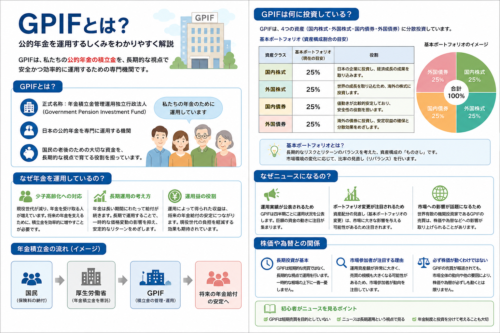

話題・トレンド
GPIFとは？なぜ年金を株式で運用しているの？株価や為替への影響を初心者向けに解説
GPIFは、日本の公的年金の積立金を長期的に管理・運用する機関です。ニュースでは巨額の運用益や損失、株式の売買、資産配分の変更などが注目されますが、短期間で利益を狙う投資家ではありません。本記事では、GPIFの役割、年金を運用する理由、基本ポートフォリオ、株価や為替との関係を初心者向けに整理します。
Overview
GPIFの役割と年金運用の全体像

現役世代などが年金保険料を納める
給付に使わなかった一部が積み立てられる
厚生労働大臣からGPIFへ寄託される
国内外の株式・債券などで運用する
将来世代の年金給付を補う
GPIFが運用しているのは、毎月の年金給付に必要な資金のすべてではありません。公的年金制度では、現役世代が納める保険料、国庫負担、年金積立金などを組み合わせて給付を支えています。
Definition
GPIFとは？
GPIFは、日本の公的年金制度を長期的に支えるため、年金積立金を管理・運用する独立行政法人です。
正式名称
正式名称は「年金積立金管理運用独立行政法人」です。英語名のGovernment Pension Investment Fundを略してGPIFと呼ばれています。
公的年金を運用する機関
厚生労働大臣から寄託された年金積立金を、国内外の株式や債券などで管理・運用し、その収益を年金財政に役立てます。
年金制度の安定に貢献
運用収益や積立金は、長期的な年金財政のなかで将来世代の年金給付を補う役割を持っています。
私たちの年金との関係
日本の公的年金は、基本的に現役世代が納めた保険料を、その時点の年金受給者への給付に使う仕組みです。ただし、少子高齢化が進むと、保険料を負担する現役世代が減り、年金を受け取る高齢者が増えていきます。
そのような人口構造の変化に備え、これまでに積み立てられた年金積立金を長期的に活用し、将来の年金給付を補う仕組みが設けられています。GPIFは、この積立金を管理・運用する役割を担っています。
GPIFの運用成績が良かったからといって、現在受け取っている年金額がそのまま増えるわけではありません。反対に、ある四半期に運用損失が出たからといって、すぐに年金が支払えなくなるわけでもありません。
Why Invest
なぜ年金を運用しているの？
年金積立金を運用する目的は、短期間で大きな利益を得ることではありません。長期的な年金財政を支え、積立金の実質的な価値を維持することが主な目的です。
少子高齢化
将来の給付を補うため
現役世代が減り、年金受給者が増えると、保険料収入だけでは年金財政への負担が大きくなります。積立金は、将来世代の給付を補うために使われます。
物価・賃金
実質的な価値を守るため
現金だけで長期間保有すると、物価や賃金の上昇によって積立金の実質的な価値が低下する可能性があります。そのため一定の収益を目指して運用します。
長期運用
時間をかけて収益を積み上げる
年金積立金は長期的な財政計画のなかで利用されます。GPIFは短期的な相場予想ではなく、長期・分散投資を基本に運用しています。
運用益は年金財政を支える一つの財源
公的年金の財源は、年金保険料、国庫負担、年金積立金などで構成されています。GPIFによる運用収益や積立金は、長期の年金財政計画のなかで、将来世代の年金給付を下支えするために使われます。
ただし、年金財源のすべてをGPIFの投資収益でまかなうわけではありません。「年金が株式市場だけに依存している」と考えるのではなく、年金制度全体のなかで積立金が補助的な役割を持っていると理解することが大切です。
Asset Allocation
GPIFは何に投資している？
GPIFは、国内債券・外国債券・国内株式・外国株式という主要な4資産を中心に分散投資しています。2025年4月1日から適用されている基本ポートフォリオでは、4資産の中心値がそれぞれ25％に設定されています。
国内債券
25％比較的値動きが小さく、ポートフォリオ全体の安定性を支える資産です。
外国債券
25％海外の債券へ分散できますが、円換算では為替変動の影響も受けます。
国内株式
25％日本企業の成長や利益拡大による収益を期待する資産です。
外国株式
25％世界各国の企業成長を取り込み、投資地域を分散する役割があります。
| 資産 | 基本配分 | 乖離許容幅 | 主な役割 | 主な変動要因 |
|---|---|---|---|---|
| 国内債券 | 25％ | ±6％ | 安定性の確保、株式とは異なる値動き | 国内金利、物価、金融政策 |
| 外国債券 | 25％ | ±5％ | 海外金利への分散、地域分散 | 海外金利、為替、各国の信用状況 |
| 国内株式 | 25％ | ±6％ | 日本企業の成長による収益の確保 | 企業業績、景気、金利、投資家心理 |
| 外国株式 | 25％ | ±6％ | 世界経済の成長を取り込む | 海外企業の業績、世界景気、為替 |
※ スマートフォンでは横にスクロールできます。
基本ポートフォリオとは？
基本ポートフォリオとは、長期的にどの資産をどの程度保有するかを示す基準です。毎日必ず25％ずつになるわけではなく、市場価格の変動によって実際の割合は上下します。
資産配分が基準から大きく離れた場合は、増えすぎた資産を売り、減った資産を買うリバランスが行われることがあります。これが市場で「GPIFの売買」として注目される理由の一つです。
4資産へ分ける目的は、どれか一つの市場だけに依存しないためです。国内外、株式と債券を組み合わせることで、値動きの偏りを抑えながら長期的な収益を目指します。
Why In The News
GPIFはなぜニュースになるの？
GPIFは世界でも大規模な年金運用機関であり、運用額や保有資産が大きいため、その動向が国内外の市場参加者から注目されます。
運用成績
巨額の利益・損失が見出しになる
四半期や年度ごとの損益額は大きくなりやすく、「過去最大の利益」「巨額損失」と報じられることがあります。ただし、短期間の数字だけで長期運用の成否は判断できません。
資産配分
基本ポートフォリオの変更
株式や債券の比率が変更されると、将来どの資産への投資が増減するのかが注目されます。市場の需給観測につながるためです。
リバランス
売買の思惑が生まれやすい
株価上昇や円安によって資産配分が基準から離れると、比率調整の売買が意識されます。ただし、実際の売買時期や規模を外部から正確に予測することは困難です。
Market Impact
GPIFと株価・為替の関係
GPIFは大規模な投資家であるため、市場の需給に影響する可能性があります。しかし、「GPIFが買うから必ず上がる」「売るから必ず下がる」と単純化することはできません。
国内株式との関係
国内株式の比率を高める局面や、リバランスで国内株を買う観測が強まると、日本株の需給材料として意識されることがあります。一方で、株価は企業業績、金利、海外市場、投資家心理など多くの要因で動きます。
外国資産と為替の関係
外国株式や外国債券は、円換算すると為替変動の影響を受けます。円安になると外貨建て資産の円換算額が増えやすく、円高になると減りやすくなります。
円安時に起こりやすいこと
外国株式や外国債券の円換算額が増え、外国資産の比率が上昇する場合があります。その結果、資産配分を戻すための売却や他資産の購入が意識されることがあります。
円高時に起こりやすいこと
外国資産の円換算額が減り、比率が低下する場合があります。ただし、株価自体の上昇・下落や債券価格の変化も同時に影響するため、為替だけでは判断できません。
GPIFの運用成績を見るときは、株価だけでなく、債券価格、金利、為替、資産配分の変化をまとめて確認する必要があります。
For Beginners
初心者がGPIFのニュースを見るポイント
見出しの金額だけに反応せず、どの期間の損益なのか、何が原因だったのか、長期運用のなかでどう位置づけられるのかを確認しましょう。
期間を確認する
四半期、年度、運用開始以来では数字の意味が異なります。短期の損失と長期的な累積収益は分けて見ましょう。
損益の原因を見る
国内株、外国株、債券、為替のどれが影響したのかを確認すると、ニュースの背景を理解しやすくなります。
年金制度全体と分ける
GPIFの損益だけで年金制度の安全性や将来の給付額が決まるわけではありません。保険料、国庫負担、人口構造なども関係します。
- 「何兆円の損失」という見出しだけで判断しない
- 短期の損益と長期の運用成果を分ける
- 株式・債券・為替のどれが影響したかを見る
- 基本ポートフォリオや資産構成割合を確認する
- 公式資料で一次情報を確認する
Related Articles
関連する基礎知識
GPIFの運用を理解するには、分散投資、長期投資、株価指数、金利、為替などの基礎も一緒に確認すると理解が深まります。
FAQ
GPIFに関するよくある質問
GPIFとは何ですか？
GPIFは、年金積立金管理運用独立行政法人の略称です。日本の公的年金の積立金を、国内外の株式や債券などで長期的に管理・運用しています。年金は株で運用されているのですか？
年金積立金の一部は株式で運用されていますが、株式だけではありません。国内債券、外国債券、国内株式、外国株式へ分散投資しています。GPIFが株を買うと株価は上がりますか？
買い需要が需給に影響する可能性はありますが、必ず上がるわけではありません。株価は企業業績、金利、為替、海外市場など多くの要因で動きます。GPIFは損失を出すことがありますか？
あります。株式や債券は価格が変動するため、四半期や年度など短い期間では損失になる場合があります。GPIFは長期的な収益確保を目的としているため、短期の数字だけで判断しないことが重要です。外国資産は為替の影響を受けますか？
受けます。一般に円安になると外国資産の円換算額が増えやすく、円高になると減りやすくなります。ただし、株価や債券価格の変化も同時に影響します。GPIFの運用状況はどこで確認できますか？
GPIF公式サイトで、四半期ごとの運用状況、年度の業務概況書、資産構成割合、保有銘柄などを確認できます。
Summary
まとめ｜GPIFは将来の年金を支えるために長期・分散運用している
- GPIFは公的年金の積立金を管理・運用する独立行政法人です。
- 年金積立金の実質的な価値を維持し、将来の給付を補うために運用しています。
- 国内債券、外国債券、国内株式、外国株式へ分散投資しています。
- 2025年4月からの基本ポートフォリオは4資産をそれぞれ25％としています。
- GPIFの売買は市場で注目されますが、株価や為替を一方向に決めるものではありません。
- ニュースを見るときは、短期の損益だけでなく、期間・資産別要因・長期累積収益を確認することが大切です。
Official Sources
主な公的情報
Next Step
長期投資と分散投資の考え方も確認する
GPIFの運用方針は、短期予測ではなく、長期・分散・資産配分を重視しています。個人投資でも同じように、複数資産へ分ける考え方や、自分が負えるリスクを確認することが大切です。
ご利用にあたっての注意事項
本記事は一般的な情報提供と金融教育を目的としており、特定の企業・銘柄・ETF・投資信託・証券会社の推奨や、投資の勧誘を目的としたものではありません。株式や債券などの金融商品は元本保証がなく、相場変動、為替変動、信用状況、制度変更などにより損失が生じる場合があります。最新情報はGPIFや関係機関の公式発表を確認し、投資判断はご自身の判断と責任で行ってください。